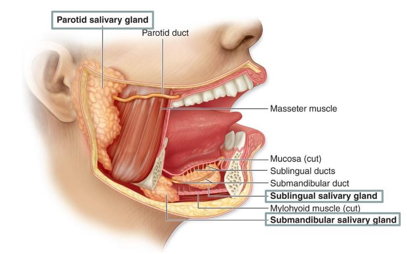
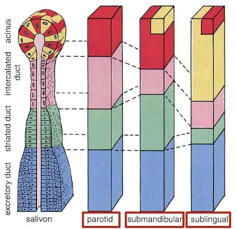
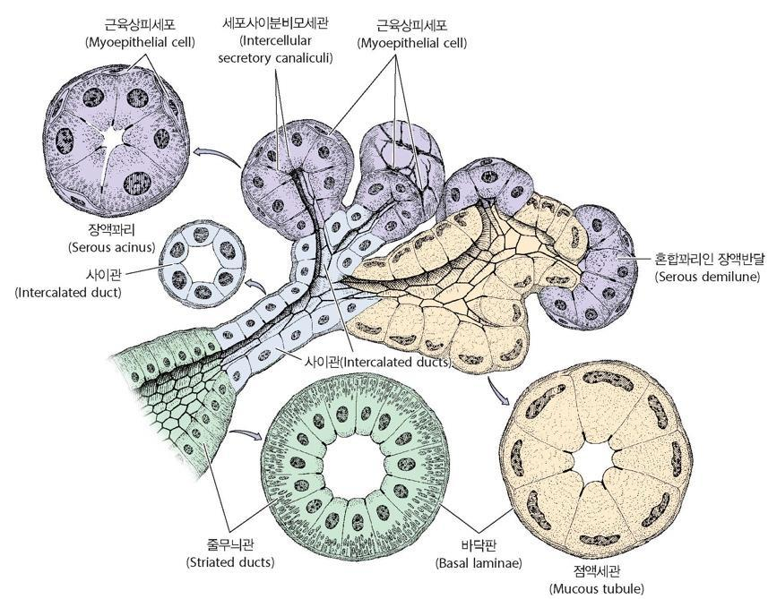
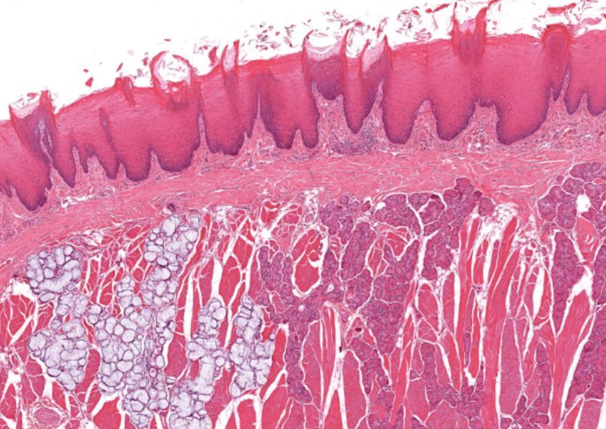
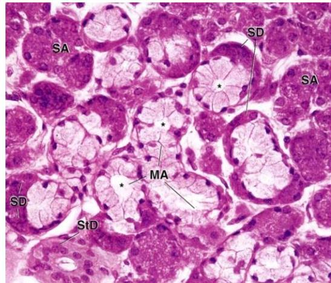
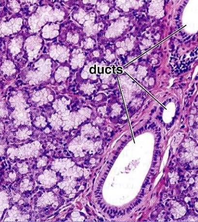

침샘(salivary glands)은 구강으로 침을 분비하는 외분비샘(exocrine glands)이다.
큰침샘과 작은침샘
세 쌍의 큰침샘(major salivary glands)은 복합관상샘꽈리샘(compound tubuloacinar glands)이다.
- 귀밑샘(parotid gland): 장액샘(serous gland)이다.
- 턱밑샘(submandibular gland): 혼합샘(mixed gland)이며 장액 성분이 우세하다.
- 혀밑샘(sublingual gland): 혼합샘이며 점액 성분이 우세하다.
작은침샘(minor salivary glands): 구강점막에 있는 작고 피막이 없는 샘으로 대부분 점액샘이다. 예외적으로 von Ebner glands는 장액샘이다.


큰침샘의 구조
결합조직 피막과 사이막(septa)이 샘을 엽(lobe)과 소엽(lobule)으로 나눈다. 분비부와 도관계통으로 구성된다.
- 분비끝부분(secretory end pieces): 장액샘꽈리(serous acini)와 점액샘꽈리(mucous acini)가 있다. 근육상피세포(myoepithelial cells)가 수축하여 침 배출을 돕는다.
- 소엽속도관(intralobular ducts): 사이도관(intercalated duct)과 줄무늬도관(striated duct)이다. 줄무늬도관은 전해질 조성을 변형한다.
- 소엽사이도관(interlobular ducts): 배출도관(excretory ducts)이며 마지막에 주도관(main duct)으로 이어진다.



